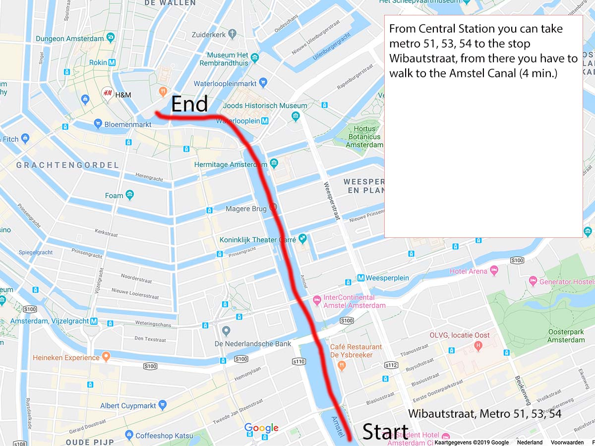

Activities
5 December has been marked as Saint Nicholas Day. Saint Nicholas was a bishop in Myra (present day Turkey), who helped the poor. He died on 6 December 342 and after he was declared a saint, this became his name day.
The arrival parade
In November the arrival of Sinterklaas on his steamboat from Spain is celebrated with a colourful parade. He is seen sailing all over the canals and eventually you will get to shake his hand and receive some sweetness from the Pieten.
€ 0,
Date: Sunday 17 November 2019,
from 10:00 - 15:30